北京以新老结合著名棋手组成最强阵容，八日乘头班城际列车赴津挑战天津棋手，上车前就遇晚点小烦，下车又早下于天津北站，打车到达赛场竟跳字到四十四元（在北京四十四元可是个不近的路程）。11点多在天津中华基督教青年会与韩建文、乔东兵为首的天津队相汇，寒暄后决定先吃午饭12点开赛，可点了菜后半个小时，后厨竟没一点动静，无奈换了个餐馆，这一磨蹭到12：30，第一轮比赛仓促开始。
这次比赛北京以陈伟、吴昊、曹冬、仇云飞为一队，胡瑜、姚金蕊、梁大伟、李一为二队、阵容可谓“豪华”，其实这次比赛意在为京沪擂台赛热身，拉练式的比赛为大家找一点客场感觉。赛前布置让大家体会一下劣势下防守，掌握反击时机的心态。
第一轮比赛北京一队陈伟负于天津老将陈海祥，曹冬负于美女李非。北京二队胡瑜负于魏强，让远道而来的北京队吃了个下马威。
第二轮北京一队陈伟再折戢于美女李非，仇云飞读秒时看错出漏负赵悦。
第三轮北京二队姚金蕊也许因为前两轮胜的太容易了，布局阶段就陷入被动，负于魏强
第四轮北京二队姚金蕊、李一、梁大伟都因疏忽负。
最后北京一队以12比4、北京二队以11比5分别战胜天津一、二队。
比赛吸引了不少天津爱好者观看，据说还有从外地来观战的。
两地棋手畅谈友情，切磋棋艺，热情高涨。因为要赶返京末班，大家只有无奈合影后握手告别。
没想到在条件简陋的天津临时客站，再一次让北京队与列车晚点相拥，到京最少迟到20分钟。
去也匆匆，来也匆匆，每个人从中悟到的经验是宝贵的……。
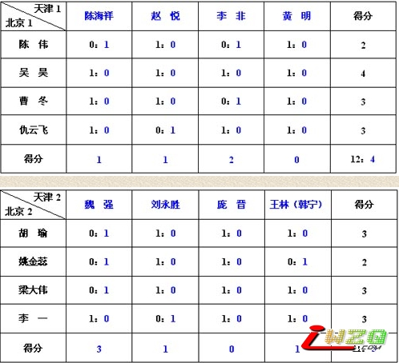
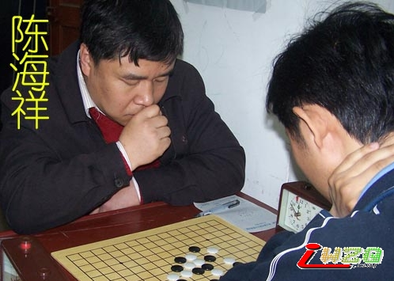
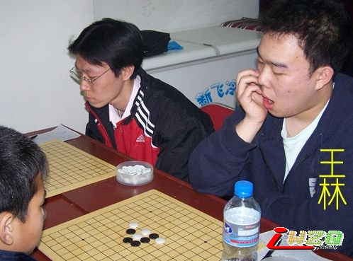
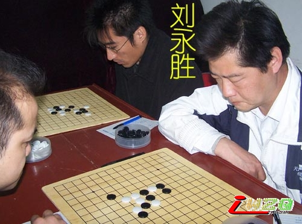
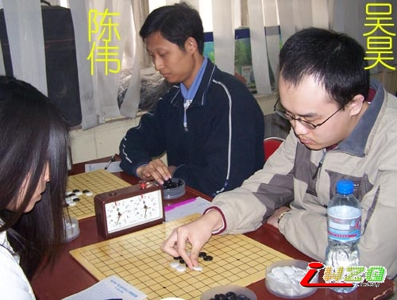
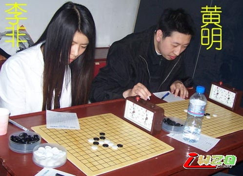
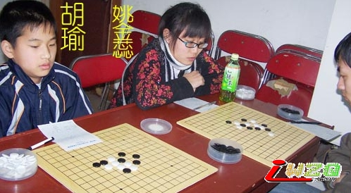
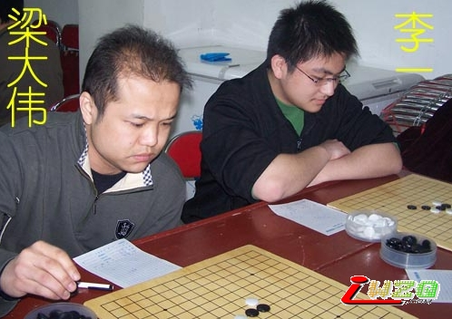
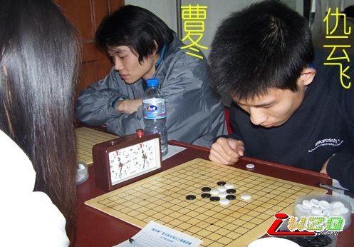
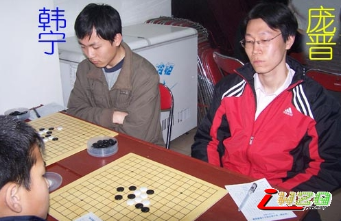
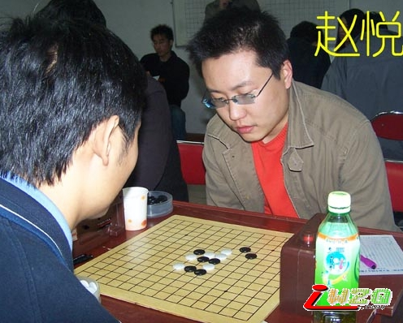
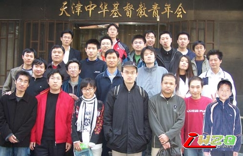